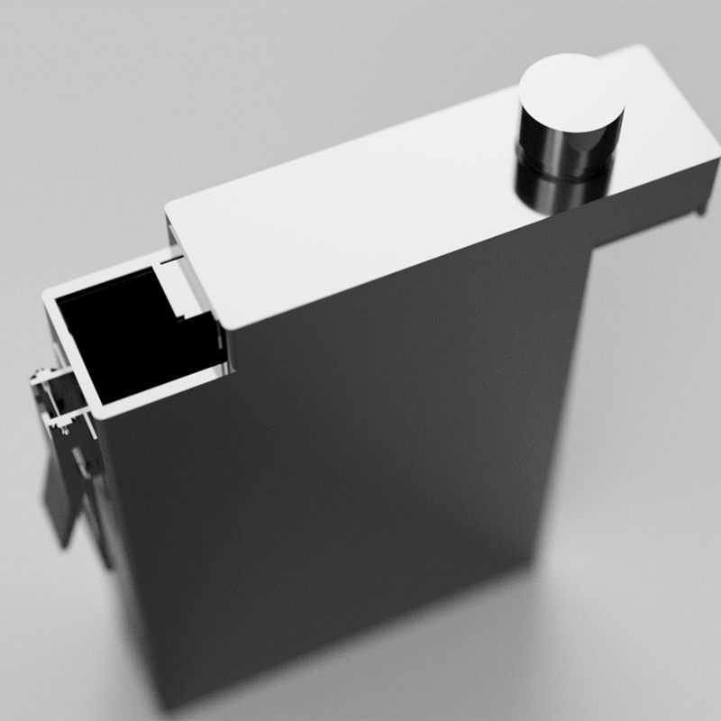

Scales / 01
Objects
Product design. The things people hold, use and live with every day, where a small change in how something works can change a whole routine.
- Sections
- 4
- Works
- 4
- Open
- 2
Light + living
Lighting and atmosphere: objects that shape how a room feels.

Household
Everyday rituals: the objects behind cleaning, drinking and preparing.

Magazine Bottle
Flat bottle · sliding lid mechanism
EOD-00X · Open ground
The next household work
Section · open ground
Tactile controls
Can modern technology have physical character? Dials, switches and interfaces you feel. A first experiment, a glass dial, is waiting to start.
Section · open ground
Furniture
Pieces built to be repaired and passed on. No work here yet.